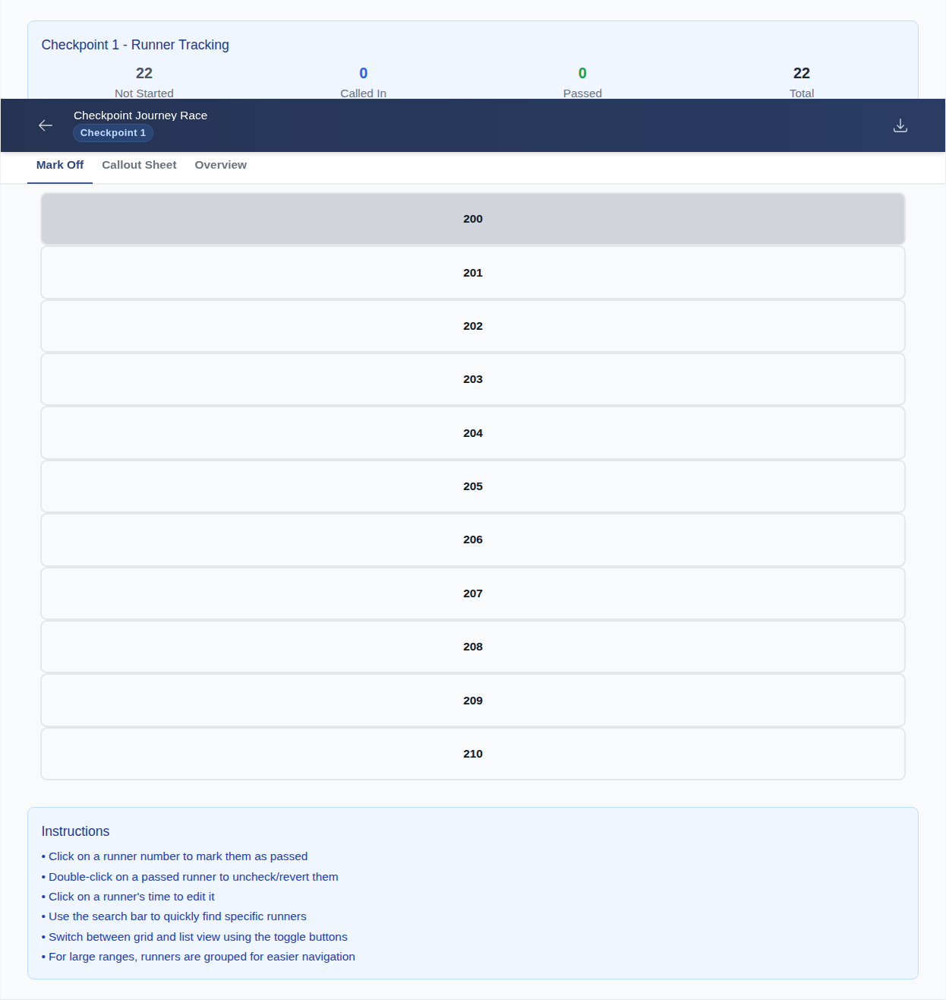
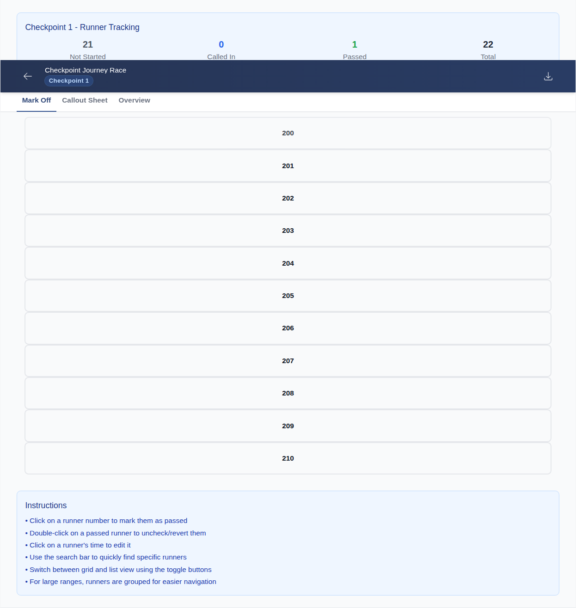
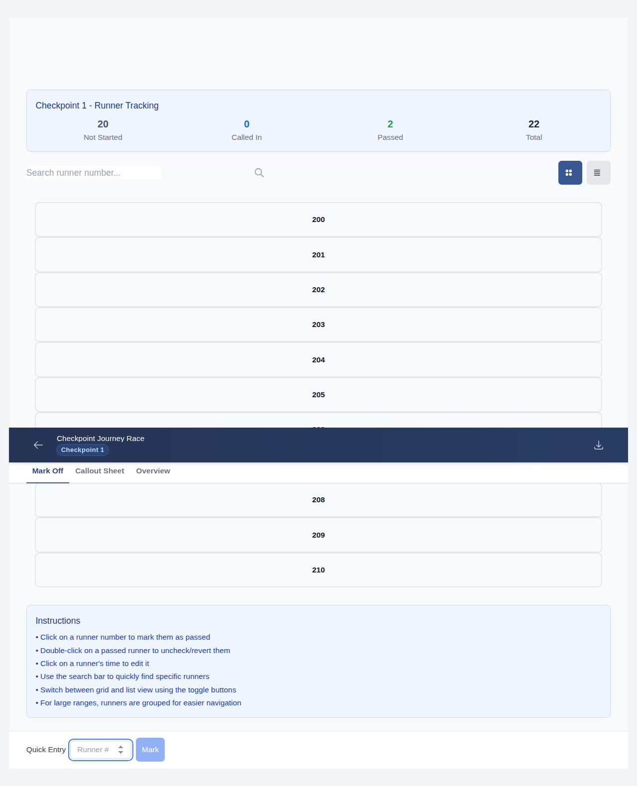
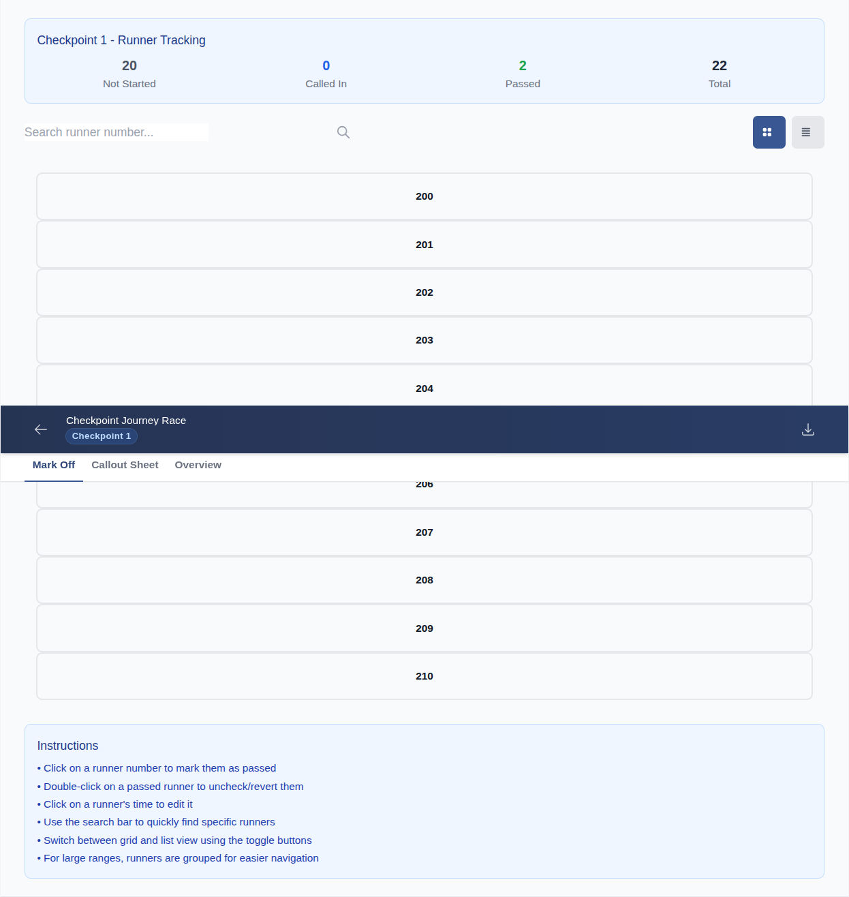
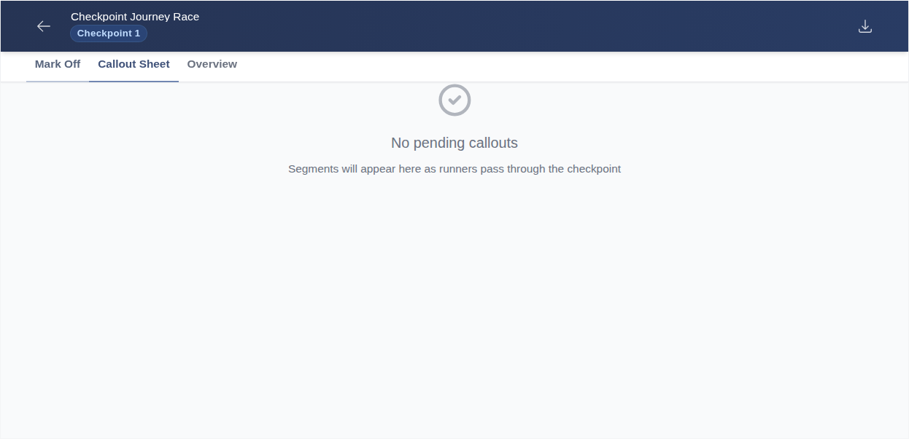
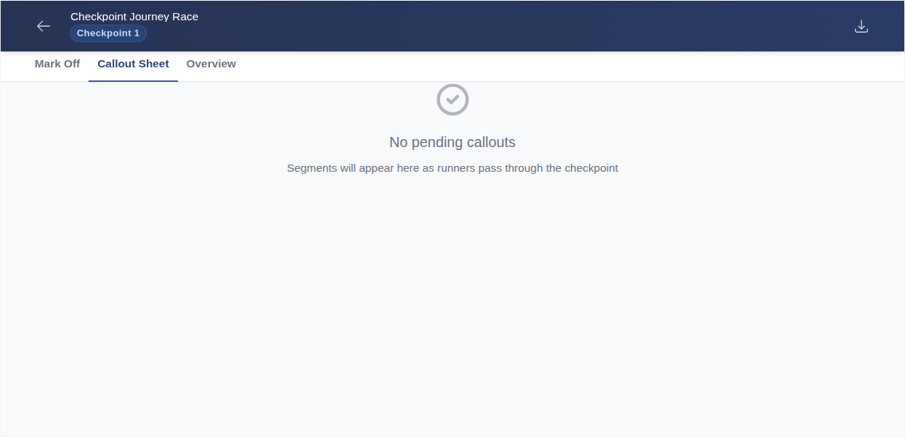
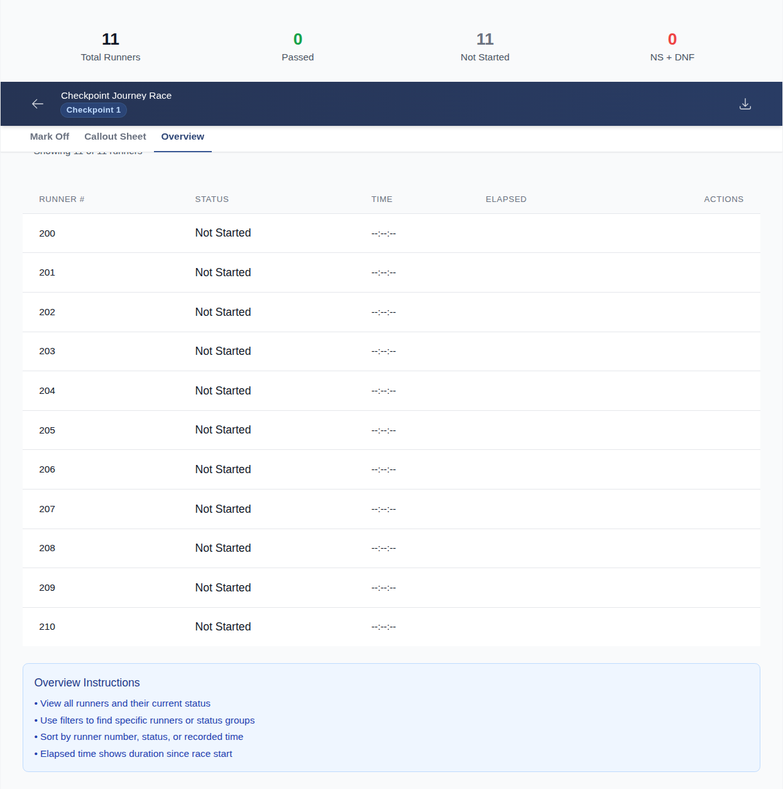
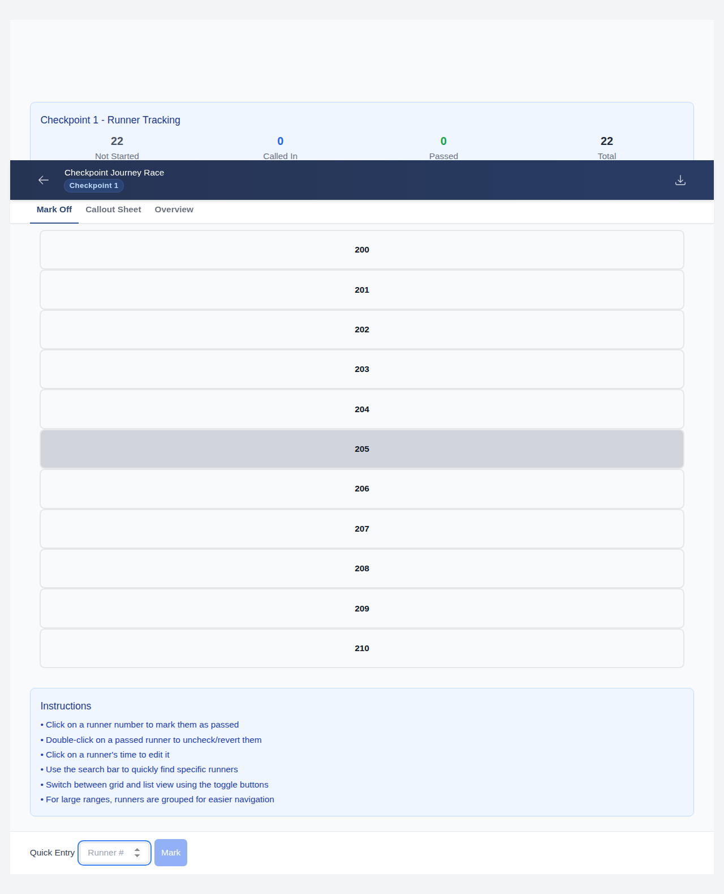
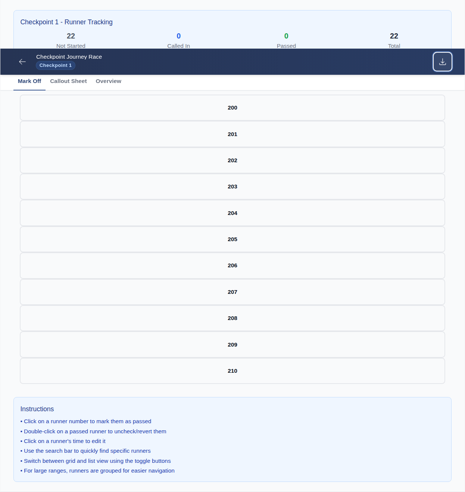

👤 About this journey
Sam — Sam is a checkpoint volunteer stationed at Checkpoint 1. Sam arrives before the first runner, opens RaceTracker Pro on a tablet, and is responsible for recording every runner who passes through and calling in missing numbers to the base station operator.
Open the Checkpoint Screen
⚠ Screenshot data not found for test: "navigates to checkpoint and sees runner grid" — run make test-e2e first.
Mark Off Runners
marks off a single runner via the runner grid
A checkpoint volunteer clicks on a single runner's bib number tile in the grid to record that the runner passed through. The tile should change colour or appearance to make it obvious that runner has been marked as "through".
Runner grid — tap first runner tile (200s range)

Runner tile — marked state applied

marks off multiple runners via Quick Entry
Instead of finding runners in the grid, a volunteer can just type a bib number and press Enter to record it quickly. This test enters two bib numbers one after the other using the quick-entry shortcut and confirms both runners are marked off.
Quick Entry — type first bib number and press Enter
Quick Entry — type second bib number and press Enter

Runner grid — both runners marked off

Call Out Missing Runners
switches to Callout Sheet tab
The Callout Sheet tab shows the list of runners who have not yet been recorded at this checkpoint. Volunteers read these numbers out over the radio to base station. This test checks the tab loads correctly and the list is visible.
Callout Sheet tab — tap to switch

Callout Sheet — unrecorded runners listed

switches to Overview tab and shows runner counts
The Overview tab shows a summary — how many runners have been through, how many are still expected, and other totals. This test confirms those summary numbers appear correctly when the tab is selected.
Overview tab — tap to switch
Overview — runner count summary visible

Export Results
can export checkpoint results
At the end of a checkpoint shift, a volunteer may need to export their recorded data to share with base station or keep as a backup. This test checks that the export option can be opened from the checkpoint screen.
Checkpoint view — navigate to checkpoint

Export option — triggers JSON download
